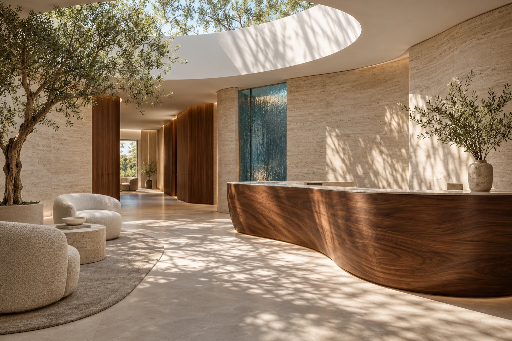

Considered surroundings.
Light, natural materials and room to settle in. An environment imagined with your experience in mind.
01 / A little more human
We believe the experience matters as much as the details. That’s why we start with the person behind the smile.

02 / The reason behind it
“A little extra time.
An explanation that lands.
A question welcomed.”
Light, natural materials and room to settle in. An environment imagined with your experience in mind.
Your priorities, clearly heard. Your options, clearly explained. A connected experience from hello to the next step.
03 / What we come back to
These are the foundations of the experience we’re creating.
Your priorities belong at the centre of the visit. Making room to understand your questions, preferences and concerns is where thoughtful care starts.
Every proposed step should come with a clear explanation. Plain language helps you understand the options and take part in decisions about your care.
Comfort means different things to different people. The experience should leave room to ask, pause, consider and say what would help.
04 / The people make the difference
A connected experience takes collaboration, care and attention behind the scenes.
Clinical conversations, visit coordination and a welcoming environment each play a part. The people and space shown here illustrate the studio experience.
Start a conversation05 / Considered at every step
A good experience is a collection of small, thoughtful decisions.
An environment imagined around light, calm and a sense of welcome.
The purpose, options and practical details of care explained in everyday language.
Clarity on what happens after a visit and how to raise further questions.
06 / Come as you are
A fresh perspective starts with a simple hello.